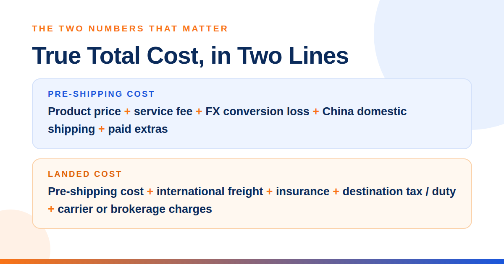
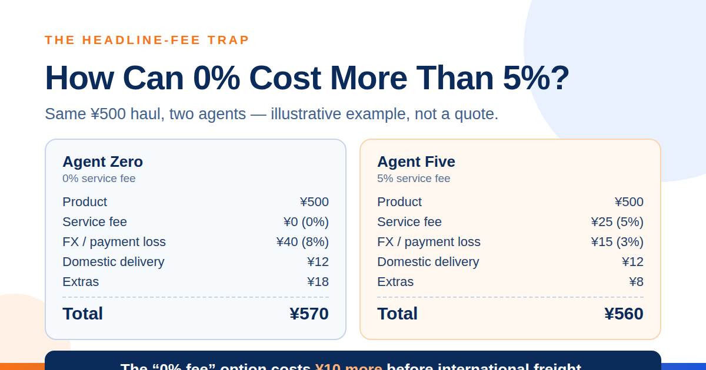
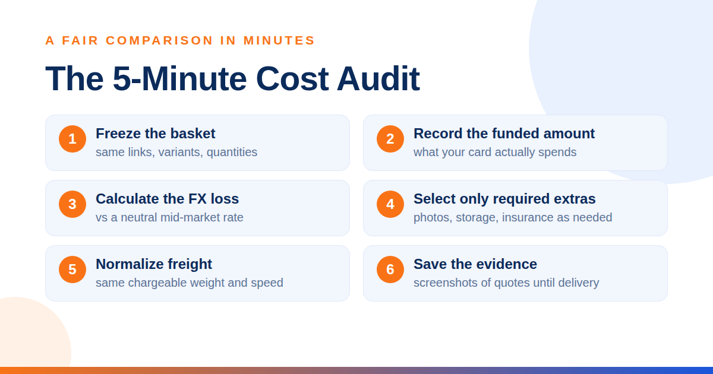
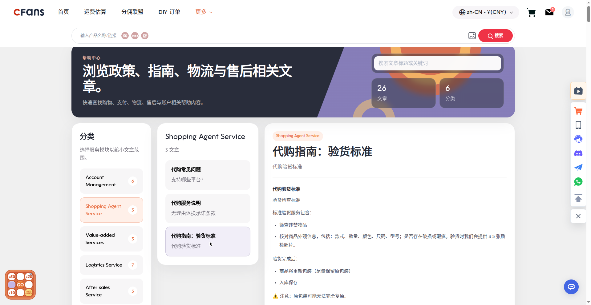

A practical decision guide for overseas shoppers, sneaker and streetwear buyers, students, diaspora communities, small resellers and dropshippers.
COST
Compare what your card is charged, not only the advertised commission.
CONTROL
Use QC evidence and domestic returns before international shipping.
FIT
Choose for your route, parcel type and buying frequency.
What does a Taobao agent actually do?
A Taobao agent is a purchasing and forwarding service that buys from Chinese marketplaces on your behalf, receives the goods at a China warehouse, performs a visible quality check, stores and consolidates orders, and arranges international delivery.
That bridge matters because many sellers on Taobao, 1688 and Weidian are built for domestic customers: listings are in Chinese, payment and seller communication may be local, and the seller may ship only inside mainland China. The agent does not manufacture the item, guarantee authenticity or replace customs. It coordinates the transaction and gives you a checkpoint before the parcel leaves China.
How should you choose the best Taobao agent?
What is the true total cost of a Taobao agent?
Headline service fees are only one layer. The right number is the amount required to move the correct goods from the seller to your door, with the protection level you actually need.


Why can the exchange rate matter more than the service fee?
Many agents display an internal renminbi (CNY) balance while the buyer pays in another currency. The conversion loss is the difference between the neutral market-rate cost and the amount the payment flow actually charges after its exchange rate and payment fees. On a ¥500 basket, every 1% of loss equals ¥5. A practical comparison should stress-test roughly 3%–8% because spreads and payment methods vary; this is a budgeting band, not a published rate for every agent.
| Cost layer | What to capture | Common mistake |
|---|---|---|
| Product | Listing price × quantity | Ignoring seller price changes |
| Service fee | Rate, minimum, category rule | Assuming “0%” means everything is free |
| FX + payment | Card charge for exact CNY credit | Using a search-engine FX rate |
| Domestic delivery | Seller → warehouse | Leaving it out of the basket |
| Warehouse extras | Photos, storage, repack, removal | Adding services automatically |
| International | Actual/volumetric billable weight | Comparing price per kg only |
| Border charges | Duty, tax, handling | Treating estimates as guarantees |
International carriers may charge the greater of actual and volumetric weight. DHL Express, for example, publishes the formula length × width × height in centimeters ÷ 5,000 and advises checking the current divisor for the service used.[1] CFans’ logistics guidance commonly uses length × width × height ×1000÷8000 for volumetric weight in grams, varying by line — e.g. 8,526 g is rounded up to 8,600 g; weight disputes are settled by top-up or refund at the customer-service unit price, with claims due within 7 days of signing or 45 days of shipment (cfans.com, Sep 2026).
How can a 0% service fee cost more than a 5% fee?
Assume two fictional but realistic agents quote the same ¥500 haul. The items, China domestic delivery and international route are identical. “Agent Zero” promotes no service fee but the payment path costs 8% above a neutral-rate conversion and adds ¥18 of warehouse extras. “Agent Five” charges 5%, but its conversion loss is 3% and its extras are ¥8. All figures in this example are illustrative placeholders, not quotes.

| ¥500 basket | Agent Zero | Agent Five |
|---|---|---|
| Product price | ¥500 | ¥500 |
| Service fee | ¥0 (0%) | ¥25 (5%) |
| FX/payment loss | ¥40 (8%) | ¥15 (3%) |
| Domestic delivery | ¥12 | ¥12 |
| Extras | ¥18 | ¥8 |
| Pre-shipping total | ¥570 | ¥560 |
How do you run a fair five-minute cost audit?

- 1. Freeze the basket. Use the same links, variants, quantities and seller domestic shipping.
- 2. Record the funded amount. Note how much local currency your card or wallet must spend to create the required CNY balance.
- 3. Calculate the effective FX loss. Compare that charge with a neutral mid-market conversion at the same time, then include payment fees.
- 4. Select only required extras. Add detailed photos, storage extension, vacuum packing, corner protection or insurance only when needed.
- 5. Normalize freight. Compare eligible lines at similar speed and insurance using the same chargeable weight.
- 6. Save the evidence. Keep screenshots of the quote, route terms and insurance limit until delivery.
Useful metric for resellers: landed cost per sellable unit = total landed cost ÷ units that passed QC. A cheap batch with defects can have a high usable-unit cost.
How do the major Taobao agents compare?
Use this table to build a shortlist, not as a permanent tariff. “Not published” means the agent does not provide a stable public number that this guide could verify. FX loss must be measured in the live payment flow. Pandabuy and Wegobuy are retained because buyers still search for them, but they are not active shortlist recommendations.
Verified CFans baseline (checked against cfans.com, logged-in session, 2026-09-26): basic purchasing service = 0% fee; standard quality inspection with 3–5 photos per item (defect standard: flaw diameter ≥0.5 cm or length ≥1 cm); paid QC upgrades — HD photos 1.5 RMB/photo (24 h), video 35 RMB/item (20–90 s); order-response SLA — response within 6 hours for 09:00–18:00 requests, processed by next day 14:00 for 18:00–09:00 requests, purchase completed within 24 hours after payment; warehouse check-in QC 3–5 business days after domestic arrival; 60-day free storage from warehouse check-in (10 RMB renews 30 days); example shipping-line quotes at 1000g — USA ¥250.85 with 8–12-day transit, UK ¥162.40 with 9–12-day transit, Germany ¥171.10 with 8–13-day transit (actual quotes vary ±5–10% and by weight/line; not a fixed price list); wallet top-up via Credit Card (2 channels) and PayPal with minimum CNY 6.10 per channel. Not verified: per-0.5kg step pricing beyond the 1000g examples, PayPal fee %, FX/top-up spread, insurance prices, return service fee amount — confirm live before publishing. Route, category, season, payment method and destination change the result. Verify all fees, speeds and operating status on each agent’s live site before publishing or buying.
Which Taobao agent should you shortlist for your use case?
Do not rank agents 1-2-3 without context. First decide what failure would hurt you most: a confusing first order, inadequate QC, poor unit economics or a fulfillment process that does not scale.
First-time buyer
If this is you: you want clear status updates, familiar payments, a simple parcel flow and responsive English support. Prioritize interface clarity, documented returns, route explanations and a small test order. Shortlist: Superbuy for a mature guided flow; CFans if its live quote and support test are competitive.
Sneaker & streetwear buyer
If this is you: the wrong size, stitching, color or box condition can ruin the purchase. Prioritize included standard QC, affordable close-ups, ruler measurements, quick domestic return handling and packaging choices. Shortlist: CFans for included standard QC (3–5 photos per item) and value; Sugargoo for five included basic photos. Ask for the exact heel, tongue, label, insole and box views you need.
Bulk buyer / small reseller
If this is you: a small percentage difference compounds across many units. Prioritize effective FX rate, batch QC sampling, consolidation, storage, negotiated handling, commercial-document support and landed cost per sellable unit. Shortlist: CFans, CSSBuy and Basetao only after a same-basket quote. Run a pilot carton before committing volume.
Dropshipper
If this is you: consistency and exception handling matter more than a one-off haul discount. Prioritize per-order handling, API or bulk tools, blind packaging, address validation, stock communication, return workflow and service-level evidence. Shortlist: agents that confirm these functions in writing. Do not assume a consumer haul workflow is a dropshipping system; ask CFans and alternatives for current business-service terms.
What should every persona test first?
- + One ordinary item from a seller with a clear return window.
- + One precise support question answered before payment.
- + One QC request with a measurable instruction.
- + One shipping quote using final packed dimensions, not a rough item weight.
What changed in the Taobao-agent landscape?
The market is more fragmented and more risk-aware than it was before 2024. Old comparison posts can still rank services that no longer accept normal orders, quote routes that disappeared, or repeat fee schedules from a different payment method. Pandabuy’s post-raid shutdown is the clearest warning: popularity, social proof and a polished interface do not remove platform, legal or custody risk.[6]
In 2026, a reliable comparison needs a date, a live checkout test and an operating-status check. It should separate purchasing fee from payment spread and shipping margin. It should also distinguish standard photos from a true inspection: even detailed QC images do not authenticate goods or test electronics.
What are the red flags of an unreliable agent?
- ! No item-specific QC evidence. Stock images, seller photos or reused warehouse pictures are not proof of what arrived.
- ! No end-to-end tracking trail. You should see the domestic tracking reference, warehouse status and international parcel number.
- ! Off-platform payment pressure. A request to pay a personal account, cryptocurrency wallet or unrelated merchant removes normal recourse.
- ! Guaranteed customs clearance. No agent can promise that customs will never inspect, tax, delay or seize a shipment.
- ! Unclear claims and insurance limits. “Insurance available” is incomplete without covered events, exclusions, evidence requirements and payout cap. CFans offers two cover types — customs-seizure insurance and parcel loss/damage insurance — bought when selecting the shipping line (some lines include cover free). Payout equals actual shipping plus actual goods value up to the insured amount; claim within 7 days of signing or 45 days of shipment. Fragile items are covered for loss only, not damage; domestic security-check returns are re-shipped free, while overseas returns are re-delivered at the recipient’s cost. Insurance prices were not found — price the cover live (cfans.com, Sep 2026).
- ! Prices that cannot be reproduced. A coupon screenshot or influencer quote is not a live, route-specific shipping price.
- ! No company or support footprint. Verify a working help channel and ask a concrete question before loading a large balance.
- ! Instructions to misdescribe goods. You are responsible for accurate declarations and compliance with destination rules.
How do you buy from Taobao with an agent?
The safest workflow creates a written record at each handoff: listing → purchase order → domestic tracking → warehouse QC → parcel quote → international tracking.
| 1 | Register and secure the accountCreate your CFans account, use a unique password, verify the email or phone method offered, and enter the destination address carefully. For a business order, use the legal consignee name that will match customs and carrier records. Do not load a large balance before you have tested the service. |
|---|---|
| 2 | Paste the Taobao, 1688 or Weidian link Copy the original product URL into CFans. Confirm that the imported title, price, color, size, quantity and China domestic shipping match the seller page. If the listing uses images instead of variant names, add a short order note with the exact selection. |
| 3 | Pay for the goods and verify the real conversionAt checkout, record the CNY order value and the amount charged in your currency. Add any payment fee. Compare the effective cost with a neutral exchange-rate reference captured at the same time. That reveals whether the exchange spread changes the apparent value of the service fee.If the seller changes the price or domestic shipping, require confirmation rather than allowing an open-ended balance deduction on a high-value order. |
|---|
What happens before the warehouse?
CFans purchases the item and the seller sends it domestically. This stage depends on seller stock and dispatch speed, not only the agent. Watch for a domestic tracking number and follow up if the seller does not ship within the stated window.
How do wallet top-up and price differences work on CFans?
CFans accepts Credit Card (two channels) and PayPal. The minimum top-up is CNY 6.10 per channel, with quick amounts of ¥500, ¥1000 or ¥2000 or a custom amount; funds credit 1–120 minutes after a successful top-up. Add your billing address before paying and do not use a VPN or proxy while paying (cfans.com, Sep 2026). Balance withdrawals take 10–15 business days and refunds 10–25 business days. If the seller changes the price or domestic shipping, CFans requests a price-difference top-up only when it exceeds the lower of 2% of the item total or ¥10 — CFans charges no handling fee on the top-up; the amount goes to the merchant. Merchants usually ship within 3–7 days after the agent’s purchase.
What should you do after the item reaches the warehouse?
| 4 | Review every QC photo before accepting the itemCFans’ standard quality inspection provides 3–5 photos per item (the count varies by product category), covering prohibited-item screening plus an appearance check of style, quantity, color, size, damage, stains and defects — the defect standard is a flaw of diameter ≥0.5 cm or length ≥1 cm (cfans.com, Sep 2026). Need more detail? HD custom photos cost 1.5 RMB per photo (ready within 24 hours); video QC costs 35 RMB per item (20–90 seconds). Warehouse check-in QC completes 3–5 business days after domestic arrival (cfans.com, Sep 2026). Storage is free for 60 days from warehouse check-in; renew for 10 RMB to add 30 days via the Renew button on the Warehouse page (allowed from 20 days before expiry until 7 days after). Unclaimed items after 60 days are treated as abandoned and may be destroyed — reminder emails go out 10 days before expiry, on the expiry day, and on day 8 after. Compare the received color, size label, quantity and visible condition with your saved order. Zoom in; do not approve from thumbnails. Request a ruler, scale or close-up when a decision depends on it. |
|---|---|
| 5 | Resolve mistakes while the goods are still in China If the item is wrong or visibly defective, open the agent’s issue or return workflow immediately. CFans’ return/exchange window is 7 days after signing or 5 days after warehouse arrival; a domestic return costs the return shipping plus a return service fee (amount not published by CFans) . State one problem per bullet and attach the relevant listing screenshot and QC image. Seller return windows can be short, and the buyer may owe domestic return postage when the issue is preference rather than seller error. |
| 6 | Consolidate and choose packaging deliberately Select only approved items. Ask to remove unnecessary outer packaging when it safely reduces volume; keep a shoebox or retail carton when condition matters. For soft goods, vacuum packing may reduce bulk. For fragile goods, choose reinforcement instead of optimizing only for price. Request the packed weight and dimensions before comparing lines. |
| 7 | Choose an eligible shipping line, pay and track Compare premium, standard and budget routes by chargeable weight, stated delivery window, category restrictions, tracking detail, tax treatment and insurance. Example CFans quotes: USA line ¥250.85, 8–12 days · UK line ¥162.40, 9–12 days · Germany line ¥171.10, 8–13 days — example quotes at 1000g from CFans' logged-in estimation tool, Sep 2026; actual quotes vary ±5–10% and by weight/line — not a fixed price list. Pay only after reading the current route terms and save the parcel number. |
| Before dispatch | After dispatch |
|---|---|
| + Address and phone verified | + International tracking active |
| + Customs description accurate | + Carrier handoff recorded |
| + Declared value supportable | + Customs requests answered |
| + Insurance scope saved | + Delivery evidence retained |
| + Parcel photo reviewed | + Damage photographed unopened |
How do you read QC photos correctly?
QC photos are evidence of visible condition, not certification. Standard images can confirm the broad model, color, quantity, labels, obvious marks and packaging. They cannot reliably prove authenticity, internal materials, battery health, waterproofing, electronic function or long-term durability. Sugargoo’s own QC guidance, for example, limits checks on sealed goods and electronics and distinguishes free basic photos from paid personalized photography.[4]

| For clothing | For sneakers | For accessories | For small-B orders |
|---|---|---|---|
| • Front, back and care/size labels • Chest, length, waist or inseam beside a ruler • Print alignment, seams, stains and hardware • Color comparison under neutral lighting | • Both lateral and medial sides • Heel, toe box, tongue and size tag • Insole and outsole measurements • Pair symmetry and box condition | • Dimensions and weight • Closures, zips, buckles and edges • Included parts and visible serial labels • Packaging needed for safe transit | • Count sealed and open units separately • Sample across cartons or color lots • Define an acceptable-defect rule • Keep batch and seller references |
How long does the whole Taobao-agent process take?
| Stage | Planning range | Main source of variance |
|---|---|---|
| Agent purchase | Same day to 2 days | Queue, payment, listing issue |
| Seller → warehouse | 2-7+ days | Stock and seller dispatch |
| Check-in and QC | 3–5 business days after domestic arrival (cfans.com, Sep 2026) | Warehouse load and item type |
| Return/exchange | 7 days after signing / 5 days after warehouse arrival | Seller approval and reshipment |
| International delivery | Example quotes at 1000g (Sep 2026): USA 8–12 days, UK 9–12 days, Germany 8–13 days — actual quotes vary ±5–10% and by weight/line | Route, customs, peak season |
Planning ranges are not service guarantees. A straightforward order may reach the buyer in roughly two to four weeks; pre-orders, seller delays, exchanges, customs checks and budget routes can extend it materially.
What do buyers need to know before paying?
Is using a Taobao agent legal?
Using a purchasing and forwarding agent is generally a lawful service. The goods, declaration and import must still comply with the laws of China, the transit route and your destination; restricted, unsafe or infringing products can be refused or seized.
What happens if my parcel is lost?
Open a claim through the agent and carrier as soon as tracking meets the route’s lost-parcel definition. Compensation depends on the selected insurance, covered events, declared value, exclusions and evidence; without adequate cover, reimbursement may be limited.
How do I read QC photos?
Compare the actual item with your saved variant, size chart and listing photos, then check visible condition, quantity, labels and measurements. Request targeted close-ups before approval; standard QC does not prove authenticity, material composition or hidden function.
How long does the whole process take?
A straightforward order commonly needs time for purchase, 2-7+ days of seller delivery, warehouse processing, packing and international transit. CFans confirms purchases are completed within 24 hours after payment, warehouse check-in QC takes 3–5 business days after domestic arrival, and example shipping-line quotes at 1000g (Sep 2026) show 8–12 days for the USA line, 9–12 days for the UK line and 8–13 days for the Germany line — actual quotes vary ±5–10% and by weight/line. It offers 60-day free storage from warehouse check-in. Seller delays, exchanges and customs can add time.
Are there hidden fees?
The biggest overlooked costs are often the FX/payment spread, China domestic shipping, detailed photos, storage extension, repacking, insurance and destination charges. Ask for the exact card charge and the packed parcel quote; “0% service fee” does not mean zero margin or zero extras.
Can I ship branded items?
Sometimes an authentic branded item can use an eligible line, but route restrictions and import rules vary. Counterfeit or infringing goods carry seizure and legal risk; check the agent’s current restricted-item list, the carrier’s terms and your customs authority before purchase.
Sources and verification references
- 1. DHL, “What is Volumetric Weight?” — formula and divisor guidance. dhl.com
- 2. Superbuy, self-service shopping-agent page — fee scope and product restrictions. superbuy.com
- 3. Sugargoo, “Sugargoo vs CNFans vs ACBuy” — dated comparison of fees, storage and QC. Note: this article covers CNFans (cnfans.com — a different company, not affiliated with CFans); its figures cannot be cited as CFans facts. blog.sugargoo.com
- 4. Sugargoo, “Quality Check Service” — included photos and inspection limits. blog.sugargoo.com
- 5. AgentsBen, “Best Pandabuy Alternative 2026” — current new-order status. agentsben.com
- 6. Wikipedia, “Pandabuy” — 2024 raids and 2026 shutdown summary; follow its primary citations for legal detail. wikipedia.org
- 7. U.S. Customs and Border Protection, Intellectual Property Rights — counterfeit-import enforcement. cbp.gov
Core CFans figures in this guide were verified against cfans.com's logged-in session on 2026-09-26: 0% basic purchasing service fee; standard quality inspection with 3–5 photos per item (defect standard: flaw diameter ≥0.5 cm or length ≥1 cm); paid QC upgrades (HD photos 1.5 RMB/photo, 24 h; video 35 RMB/item, 20–90 s); order-response SLA (response within 6 hours for 09:00–18:00 requests, processed by next day 14:00 for 18:00–09:00 requests; purchase completed within 24 hours after payment); warehouse check-in QC 3–5 business days after domestic arrival; 60-day free storage from warehouse check-in (10 RMB renews 30 days); example shipping-line quotes at 1000g (USA ¥250.85 / 8–12 days, UK ¥162.40 / 9–12 days, Germany ¥171.10 / 8–13 days — actual quotes vary ±5–10% and by weight/line, not a fixed price list); wallet top-up via Credit Card (2 channels) and PayPal, minimum CNY 6.10 per channel; return/exchange window 7 days after signing / 5 days after warehouse arrival. IMPORTANT: per-0.5kg step pricing beyond the 1000g examples, the PayPal fee %, the FX/top-up spread, insurance prices and the return service fee amount are still unknown — confirm the real numbers against live CFans data before publication.